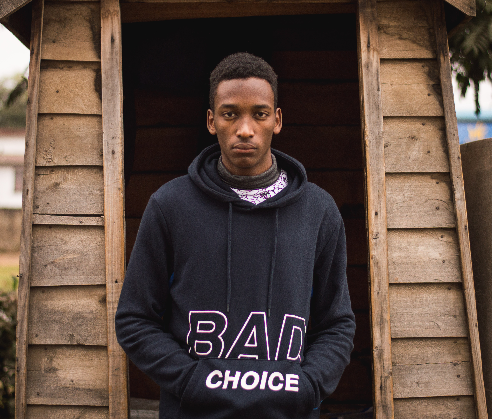

Hi, my name is Ramza Reseni, a photographer and a web developer. My passion for photography stated when I got my first smartphone, and started ameture photography with a 1 megapixel camera. I built this into a passion and have never looked back ever since.
I ventured into this field not knowing what to do, let alone knowing what ISO does, and worked around my camera learning across the way.
I wouldn't say I'm a professional photographer, but I have come a long way from the many year ago I got inspired.
If you get up in the morning and think the future is going to be better, it is a bright day. Otherwise, it's not.